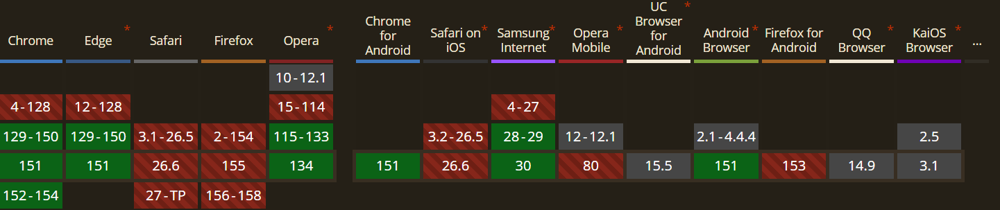

Explication
Pendant plus de 15 ans, il était impossible d'animer proprement un
élément en CSS de height: 0 vers sa taille naturelle (height: auto). Il fallait utiliser du JavaScript pour calculer la hauteur en
pixels, ou utiliser des "hacks" peu performants. La propriété
interpolate-size: allow-keywords permet enfin au navigateur
de calculer cette transition de manière totalement native et fluide.
Démo Live
Regardez cette fluidité ! Aucun JavaScript n'a été maltraité durant cette animation. Le navigateur calcule lui-même la hauteur nécessaire pour afficher ce texte, et crée une transition douce depuis 0 jusqu'à la hauteur requise.
Code CSS
:root {
interpolate-size: allow-keywords;
}
.accordion-content {
height: 0;
overflow: hidden;
transition: height 0.4s ease-out;
}
.accordion:hover .accordion-content {
height: auto;
}Compatibilité et Fallback

Fallback : Il s'agit d'une amélioration progressive (Progressive Enhancement). Si le navigateur ne supporte pas la propriété, l'accordéon s'ouvrira et se fermera de manière instantanée sans transition, mais restera 100% fonctionnel et accessible. Aucun code de secours (fallback) n'est nécessaire !